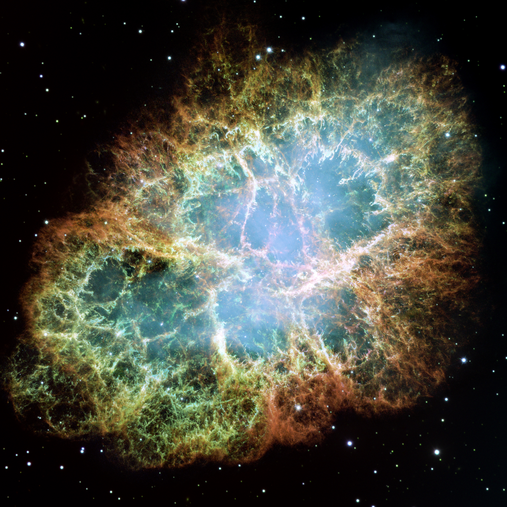
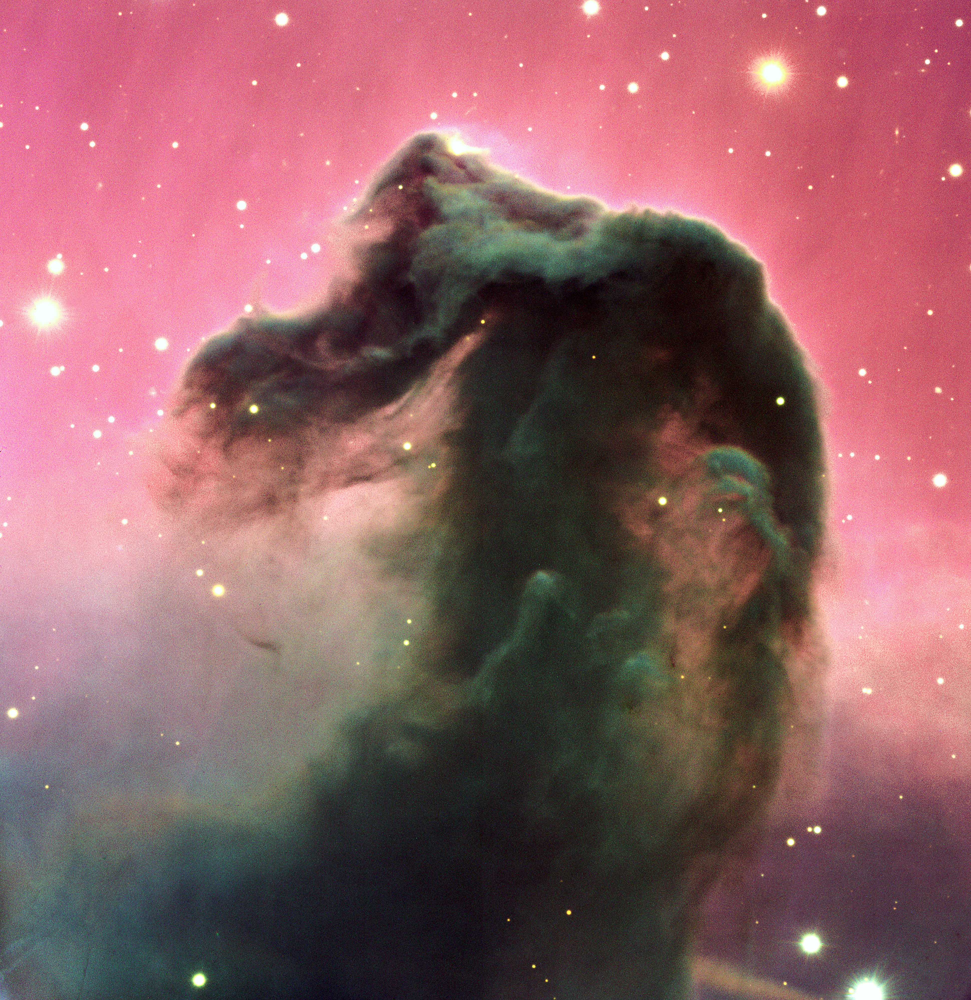
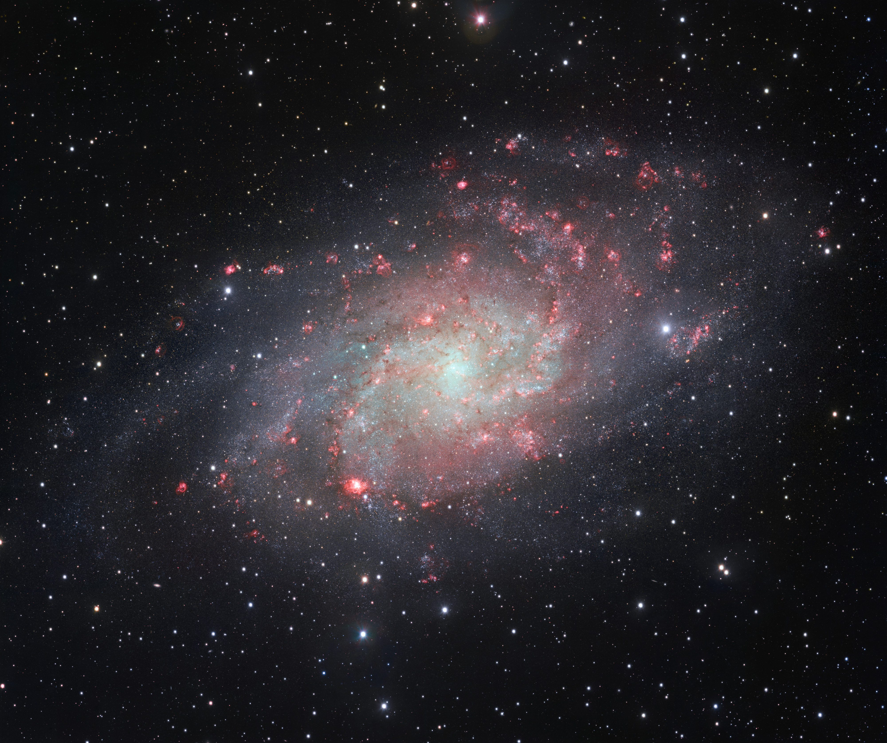
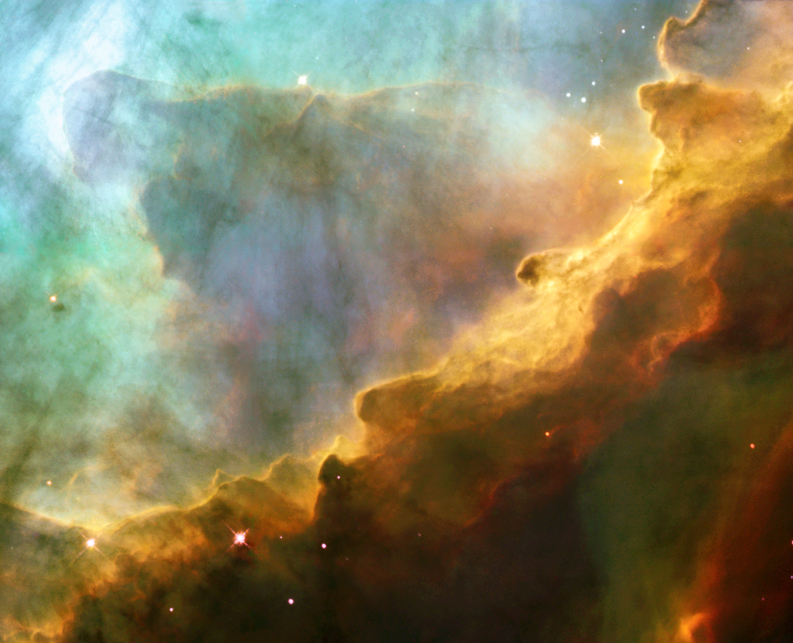
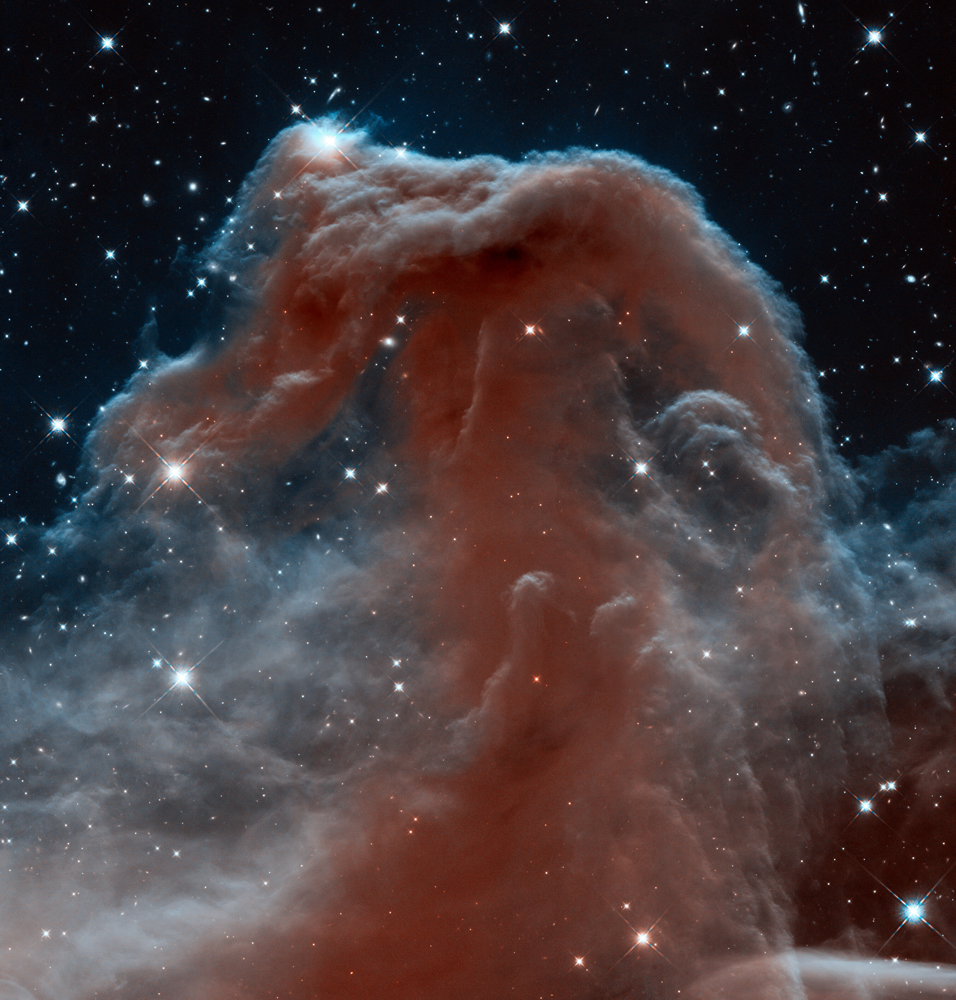

蟹状星云像一团被彩色丝线包裹的烟，马头星云像一块黑色剪影，三角座星系则有向外展开的旋臂。把它们并排放在屏幕上，很容易将差别归为形状和颜色：这一团是红色，那一团是蓝色，另一个像漩涡。然而三幅图描述的物理过程和空间层级截然不同。第一幅与一次恒星爆炸及其残留的高速旋转致密天体有关；第二幅的突出特征恰恰来自光被挡住；第三幅包含庞大的恒星、气体与尘埃系统，里面还能再找到许多星云。蟹状星云、M33
图像把遥远对象变得可见，也同时藏起了许多条件：望远镜收集了哪些波长，传感器累积了多少光，怎样处理背景，如何把数字变成屏幕上的红绿蓝。我们需要沿着光从天体到显示屏的路线走一遍。这样，辨认照片就不再是认出三块熟悉的像素，而是能够解释为什么那里发亮、为什么这里发暗，以及图像究竟允许我们说到哪一步。

图1：蟹状星云，哈勃WFPC2的24次曝光拼接。此版本使用OI约631 nm、SII约673 nm和OIII约502 nm数据，不是标准SHO组合。Credit: NASA, ESA and Allison Loll/Jeff Hester (Arizona State University). Acknowledgement: Davide De Martin (ESA/Hubble)。原图及滤镜表，CC BY 4.0。
蟹状星云位于银河系内，常用编号是M1。图中的细丝并不是恒星组成的旋臂，而是超新星遗迹中的气体结构；中心区域还存在由高能粒子与磁场有关的连续辐射。其中心的脉冲星是恒星核心坍缩留下的中子星，快速转动的辐射束使我们测得周期性信号。所谓脉冲不是整颗星每次灭掉再重新点燃，更像一束有方向的辐射随着旋转扫过视线。要确认这种性质，漂亮的静态照片不够，还需要以足够高的时间分辨率记录信号。NASA的M1说明

图2：马头星云B33及周围区域，ESO VLT/FORS2的B、V、R三波段合成，分别显示为蓝、绿、红；原观测于2000年2月1日。Credit: ESO。原图，CC BY 4.0。
马头则是一块含尘埃的云，从我们的方向看，它遮在较亮的背景之前。轮廓黑，并不要求那里没有物质；相反，足够多的尘埃削弱了后方可见光。我们在地球上看到黑云，也不能直接推断云内部比晴空空得多。“暗星云”这个名称描述其遮蔽背景的外观，不代表它在所有波段都不发射。尘埃吸收能量以后，会以与自身温度有关的辐射向外释放，尤其需要在红外等波段研究。ESO的对象分类与观测说明

图3：M33，VST/OmegaCAM宽视场图，使用g、r和Hα数据；旋臂中醒目的红色斑块包含发光气体区域。Credit: ESO。原图，CC BY 4.0。图1—3分别采用适合各对象的画幅，屏幕大小不代表相同实际尺寸。
M33是银河系之外的旋涡星系。图中最亮的许多点可以是前景恒星，不能把每一个亮点都认定为M33中的单颗恒星；而旋臂上的细碎结构包括恒星群和发光气体。星系像一个包含大量恒星及星际物质的引力系统，星云则通常指气体和尘埃形成的云状区域。二者不是“大的云”和“小的云”两个尺寸等级。距离测量尤其关键：同样视角大小的一团光，放在银河系内部与放在几百万光年之外，所对应的真实尺度完全不同。M33的变星测距历史
三个对象带出了一种很实用的比较：蟹状星云展示恒星死亡之后留下的物质与能量，马头所在的云涉及星际物质及恒星形成环境，M33把许多这样的局部过程放进一个更大的系统。照片中常见的星云形态，可以来自发射、反射或吸收；这些机制还可能在同一区域共存。只按颜色给天体分类，等于跳过了光怎样产生、怎样穿过物质的过程。
屏幕上的三幅大图很容易造成另一种错觉：它们似乎占据差不多大的天空区域。实际发布页列出的蟹状星云图横向视场约6.41角分，M33图则约68.01角分，宽了十倍以上。月亮的角直径大约半度，即30角分，因而这幅M33宽场图横跨两个多月亮直径，蟹状星云的画幅却只有月亮直径的约五分之一。这里比较的是照片覆盖的角范围，不能把画幅直接等同于天体的边界。网页自动将它们缩到同样宽，改变的是版面，天空上的尺度没有被统一。蟹状星云视场、M33视场
一旦知道距离，还可以把角尺转成空间尺。小角度下，横向尺度约为距离乘以弧度角。暂取M33约840 kpc的距离，68角分约为0.0198弧度，整个横向画幅对应约16.6 kpc，约五万四千光年；这只是由公开视场和所选距离得到的算例，并非用照片重新测得星系直径。前面“这是一座星系”所说的层级差别，由此得到一个可感受的空间量级。同样六角分大小的亮斑，如果距离换成千余光年，实际宽度便会完全不同。M33距离研究
角面积还解释为什么照片与目镜的印象差这么远。把相同的总光分摊到一百倍大的角面积上，每单位角面积收到的天体光就只剩百分之一；一颗集中亮星与一片延展星云，即使总光量相近，也不会同样醒目。延展对象的表面亮度以及它相对天空背景的对比度，往往比总星等更能说明观看难度。相机可以持续累积光子，再拉伸显示；暗处人眼的视觉又主要依靠对颜色不敏感的杆细胞。照片中鲜明的色彩和细丝因此不保证在目镜里同样可见。这个差别不会降低照片的数据价值，却要求我们区分长期累积的观测呈现与当场观看的视觉经验。OpenStax：探测器与累积曝光、NASA：视杆与视锥功能
恒星表面辐射在很宽的波长范围连续分布，温度影响其分布形状。稀薄气体却常在少数特定波长上发光，因为原子和离子的内部能级只能取某些值。电子从较高能级落到较低能级时，释放一个能量确定的光子；光子的能量与波长满足 ，其中 是普朗克常数， 是光速， 是波长。能级差选出了波长，光谱中便出现一条条发射线。这与“气体温度高，所以一定像一块通红铁板”并不是同一种辐射图景。OpenStax：光谱的产生
氢原子从第三能级降到第二能级产生的Hα线，波长约656.3 nm，在人眼可见范围内偏红。周围大质量年轻恒星的紫外辐射能够把氢电离，使电子与质子分离；电子随后复合并经历能级跃迁，产生包括Hα在内的辐射。因此，一团氢发亮，不要求内部有一颗小太阳，也不要求每一处都在发生聚变。为气体供能的恒星可能位于图外，能量先以紫外光形式传播过来。OpenStax：恒星之间的气体
OIII和SII这样的记号说的是离子状态：OIII是失去两个电子的氧，SII是失去一个电子的硫。天文光谱传统用罗马数字I表示中性原子，所以III不等于失去三个电子。常见的[OIII]约500.7 nm、[SII]约671.6及673.1 nm属于特定跃迁。方括号常表示“禁戒线”：这不是说自然界不准发生，而是跃迁概率较低，在实验室常见的高密度环境中，粒子可能先发生碰撞；稀薄星际气体提供了让这类辐射显现的条件。谱线由此不仅识别元素，也记录密度、温度和电离环境。OpenStax：星际气体
不过“氧线明亮”不能直接改写成“那里氧最多”。一条线的强度同时取决于该离子的数量、激发与退激发过程、温度和沿视线叠加的气体长度。温度或电离状态改变，可以使同样的元素在某条线里显得完全不同。更严格的丰度分析，需要多条谱线、原子物理和模型共同约束。窄带图上的颜色分区能指出值得研究的结构，却没有把一幅图自动变成元素质量百分比地图。
蟹状星云还说明，发射线不是全部。高速电子在磁场中运动能够产生同步辐射，其光谱是连续的，而且可以具有偏振性质。仅靠“这片也是红色，所以也全是氢”去解释，便会把两种能量机制混到一起。图像中的细丝与弥散区域为什么不同，需要结合光谱、多波段与时间变化；形状为解释提供线索，测量才区分竞争的物理机制。NASA：蟹状星云与同步辐射
科学相机不必先生成我们熟悉的彩色照片。许多探测器记录光子造成的电荷，再把电荷量转换为数字。一次经过滤镜的曝光提供一个空间二维数组：每个像素的数值，表示这个位置在该通带内积累的信号，并混有仪器和背景贡献。红色滤镜拍出的原始数据，完全可以先作为灰度图显示；“灰度”说的是显示方式，不是天体只发灰色光。STScI：CCD工作与性能
传感器也不是一张完美的光子账单。电子线路可能在读出时添加偏置水平，像素在没有天体光的时候也可能积累暗电流，不同像素的响应略有差别，光路还会造成视场边缘变暗。偏置帧、暗场和平场分别帮助认识这些影响：偏置描述电子读出的基准，暗场测量在相似条件下随时间积累的暗信号，平场利用较均匀照明测量相对响应。常见的概念关系是先扣除加在数据上的背景项，再除以归一化平场响应；顺序与具体仪器流水线有关，不应把它当成任意相机都能直接套用的万能代码。STScI：STIS数据校准步骤
宇宙射线还能在单次曝光中留下很亮的点或短线，它们不是目标发出的星光。多次曝光对齐后比较，能够识别许多只出现一次的异常；不同曝光之间稍微改变指向的抖动策略，还可以让同一处天空落在不同像素上，帮助处理坏像素和采样问题。然而若目标真的快速变化，也不能把所有只出现一次的信号当坏点删除。校准不仅是“让照片好看”，而是先说明仪器对测量做了什么，再为后续结论建立可追溯的数据基础。STScI：哈勃成像数据的Drizzle处理
记录数字与得到精确亮度仍有距离。滤镜通带宽度、探测器效率、曝光时间和望远镜口径，共同决定同一目标落在像素上的计数；地面观测还受到大气透明度变化影响。两幅图里同一颗星的计数不同，不一定代表它变亮，也可能是曝光时间翻倍。只有把这些条件归一化，才可以进行测光。发布图为了视觉平衡调整各通道权重以后，屏幕上的某块红色面积更不能被直接拿来当成经过校准的总能量。
弱天体成像的困难，不只是信号少，还包括测量的涨落。光子到达具有统计性质，在简单泊松计数模型下，平均累计 个光子相关的涨落量级为 。累计100个与10000个信号，相对涨落分别约为十分之一与百分之一。信号越多，相对误差才越小；扣掉一张平均天空背景，并不会把背景在这次曝光中产生的随机涨落也扣掉。STScI：曝光时间与信噪估计
对一个选定的测量区域，可用简化关系说明信噪比：
是该区域天体信号的电子计数率， 是天空背景计数率， 是该区域总暗电流率， 是总曝光时间； 是单次每像素读出噪声， 在这里代表总读出像素次数，因此包括测光区域像素数与曝光次数的乘积。公式省略平场误差、额外的背景估计误差和像素间相关性，仅用于说明随机噪声来源。单位先统一到电子，才可以把这些方差相加。若采用不同的 定义，就必须相应改写读出项。
设一块区域的天体信号率为每秒1电子，天空背景为每秒9电子，暂忽略暗电流和读出噪声。100秒得到天体信号100电子，总泊松方差约1000，信噪比约3.2；400秒得到400电子，方差约4000，信噪比约6.3。曝光时间增加四倍，信噪比才增加两倍。这里的数字是用于理解公式的假设算例，不是对上面任何天体或相机的实测性能。它解释了为什么微弱星云往往要长时间累积，也说明“背景很亮但最后可以扣掉”不能挽救所有损失。
把400秒拆成四次100秒，若读出噪声可忽略，统计收益大体相同；若每次读出都产生显著噪声，很多极短曝光会多付一笔代价。但单次曝光太长又可能使亮星饱和，跟踪偏差积累，或使一次飞机经过污染较多时间。实际选择于是要同时考虑随机噪声、跟踪、饱和和异常剔除。叠加不是魔法清晰化，它累积已有信号并改善统计；光学系统没有记录的细节，不能因为多叠几个文件就被保证恢复。
此外，足够长的曝光最终还会遇到系统误差。平场残留、大气梯度、散射光或错误背景模型可能随曝光一同累积，无法像独立随机噪声那样被平方根规律平均下去。很淡的延展结构尤其容易受到背景处理影响。把背景拟合得过于灵活，可能连真实的星云也一起抹掉；拟合不充分，则可能把仪器梯度保留成假结构。研究图像需要查看处理前后数据和误差，不能只由成品的平滑程度判断可靠性。
一颗亮星的核心与周围暗尘埃，可能在同一组数据中相差很多数量级。若把全部计数简单线性映射到屏幕从黑到白的有限等级，亮处稍有结构时，暗处可能几乎全黑；调到暗处可见，亮处又容易白成一片。图像处理常使用非线性拉伸，例如对数或反双曲正弦变换，让较宽的数值范围同时可见。它改变的是显示亮度与计数的对应关系，因此照片里“看起来亮两倍”通常不能直接解释为“原始通量两倍”。Lupton等：RGB合成与asinh拉伸
非线性显示本身可以诚实。地图也会为了看清地形选不同的高度色标，关键是说明规则并保留原始数据。但传感器饱和是另一回事：像素已经无法区分“很亮”和“更亮”，这部分测量信息确实丢失了。降低成品亮度无法恢复饱和之前的细节。用不同曝光长度处理高动态范围对象，可以让短曝光保留核心、长曝光显出外层，不过合成时仍须交代两组数据的关系，不把它叫作一次单曝光的直接记录。
锐化同样需要分寸。望远镜的点扩散函数把理想点源展成一个有限斑点，大气又进一步模糊它。若已知模糊机制，反卷积可以在一定条件下估计更清晰的结构，但噪声也会被放大，结果依赖模型与约束。亮边周围的黑白环、被过度收缩的恒星，都可能是处理痕迹。用于公共传播的图像可以强调结构，用于测量的分析则需要检查处理是否改变了光度和形态；两种用途不能仅凭文件后缀区分。

图4：M17局部，哈勃WFPC2窄带图。SII显示为红，Hα显示为绿，OIII显示为蓝；图中的显示绿色不等于氢在发绿光。Credit: European Space Agency, NASA, and J. Hester (Arizona State University)。原图及明确映射说明，CC BY 4.0。
宽带滤镜收集一段较宽的波长范围，既可能收到连续光谱，也可能包含多条线；窄带滤镜则围绕选定谱线，只让较窄的一段通过。选择Hα窄带，可以突出某些氢发射区域，并减少部分宽带背景。代价是总光子数变少，而且通带实际宽度、目标的速度导致的谱线偏移、滤镜角度与温度特性都可能影响信号。窄带不是一张能在任何光污染下复制太空望远镜效果的通行证。ESO马头宽带参数、M17滤镜表
屏幕通常用红、绿、蓝三个显示通道混合颜色。我们可以把三个经过校准和配准的科学数据通道分配给它们。常说的标准SHO映射就是SII到R、Hα到G、OIII到B；字母顺序描述数据与显示的对应。Hα和SII的主要可见谱线都在红色附近，若都忠实显示成相近红色，两个结构不容易被视觉分开；把它们放入不同显示通道，可以清楚比较其空间分布。图4的赋色并没有伪造氢的数据，只是让氢的数据承担了绿色通道。M17发布页
所谓“假色”很容易让人误会为假数据。更准确的判断是分别问数据是否来自真实观测，以及显示颜色是否对应人眼直接感到的波长。SHO可以是真实观测的编码色；红外图同样可以是真实观测的编码色；艺术家画的星云即使颜色更接近常识，也仍不是观测。真实性与显示方式是两条不同的轴。换通道可以使一个区域从绿色变成红色，原始计数、位置和波段却没有因此改变。
这也解释了为什么不能把“哈勃色”当成所有哈勃照片的固定配方。图1的蟹状星云使用OI、SII、OIII，图4的M17才有这里讨论的SHO；哈勃还有宽带、紫外、红外和其他窄带组合。图3虽然加入Hα以突出发光气体，另外两个通道却是宽带g和r。每张发布图必须查自己的版本、仪器与通道。看到青绿色的气体，就猜OIII、氢、温度或运动方向，都会越过图注真正提供的信息。
颜色还可以表示非光谱量。射电速度图可以把趋近与远离分配为蓝和红，X射线图可以按光子能量赋色，温度模型可以使用另一套色标。这些图的红色都不能套回同一个含义。只要色标明确，颜色编码便是一种测量工具；色标缺失，视觉直觉就容易把不同物理量偷换成同一种温度或者元素。

图5：哈勃WFC3近红外马头星云，约1.1和1.6 μm数据的显示色合成。Credit: NASA, ESA, and the Hubble Heritage Team (AURA/STScI)。原图与波段表，CC BY 4.0。其视场和朝向与图2不同，不能把两张图未经配准就当作同一像素的前后变化。
可见光中的黑色马头，到近红外里露出了褶皱和部分内部结构。原因不是云突然消失，也不是望远镜等了十三年把它拍白了，而是尘埃对不同波长的消光不同，较长波长可以穿过部分原先遮蔽的区域。这个效果还受尘埃粒径、柱密度和波段影响，不是所有红外都能穿透任意厚的云。可见光展示吸收剪影，近红外提供另一种视线条件，两者共同说明了同一物质系统。哈勃马头近红外说明
红外也不总是“温度照片”。近红外可以接收到恒星光及散射光，较长波段则常更适合研究冷尘埃的热辐射；究竟测什么，要看源的辐射机制与通带。一个红外相机图中显示为蓝色的区域，并没有因此具有比红色区域更短的可见光波长。原始波长都可能超出人眼范围，蓝红只是用来保存波段差异的可视编码。多波段观测的价值，就在于某种机制在一个通带里突出，另一种机制在另一个通带里突出。
比较跨波段影像，还必须比较角分辨率。假设两张图分别能分清0.1角秒和10角秒的结构，前者分辨出一团细丝，后者只看到一个模糊团块，不能立刻说后者对应的物质分布一定更平滑；仪器已经把细节平均了。严谨比较常要将较清晰图与较模糊图匹配到共同分辨率，并校正视场、朝向和位置。否则，一条看似神秘的“偏移”，可能只是配准误差或不同点扩散函数造成的。
天文照片记录沿视线到达的光，并不直接告诉我们每一部分的前后距离。M33旋臂投影在屏幕上，蟹状星云细丝彼此交叠，马头挡住背景，都是三维结构在二维上的表现。将两条细丝的交叉解释为它们发生真实碰撞，需要更多证据；将一颗星投影在云边解释为它照亮了该云，也要先考虑它是否恰好位于前景。投影可以提示联系，距离与速度才能帮助检验联系。
光谱中的多普勒位移提供沿视线速度，连续多年影像则提供天球上的角运动；若距离可知，角运动可以换算为横向速度。两类观测结合，才可能更深入地重建扩张或流动。即便如此，仍需要几何与辐射模型。把一幅照片制作成旋转的三维动画时，动画里的深度往往包含模型假设，不会因为动画流畅就变成探测器已经从每个方向绕着拍过一圈。
一张好的图注因此不是末尾加“图片来源NASA”就完事。它需要告诉读者对象及类别、仪器、波段、合成和显示方式，以及理解图中结构所需的尺度；显著的裁切、旋转或跨仪器合成也应说明。图1—5的图注保留了这些信息，所以我们能发现蟹状星云与M17不是同一窄带配方，可见马头与红外马头也不是时间前后对照。署名则把观测团队、制作团队和使用许可与图像联系起来，而不是装饰性水印。
下一次看到一幅遥远天体的照片，可以先沿着具体结构追问：亮处靠哪种机制辐射，暗处是否吸收背景，尺度由什么距离确定；再沿着测量追问：哪个波段记录了它，背景与仪器怎样处理，显示颜色承担什么含义。图像的美并不会因为这些问题消退。相反，一根细丝、一块暗云、一片旋臂会开始携带能够被比较和检验的物理信息。我们面对的便是由真实光子抵达仪器、经由明确处理进入显示屏的一份宇宙记录。
具体来源核对与本地文件版本见本批来源记录。本稿为文章初稿；人工科学审校与真实试讲尚未进行。